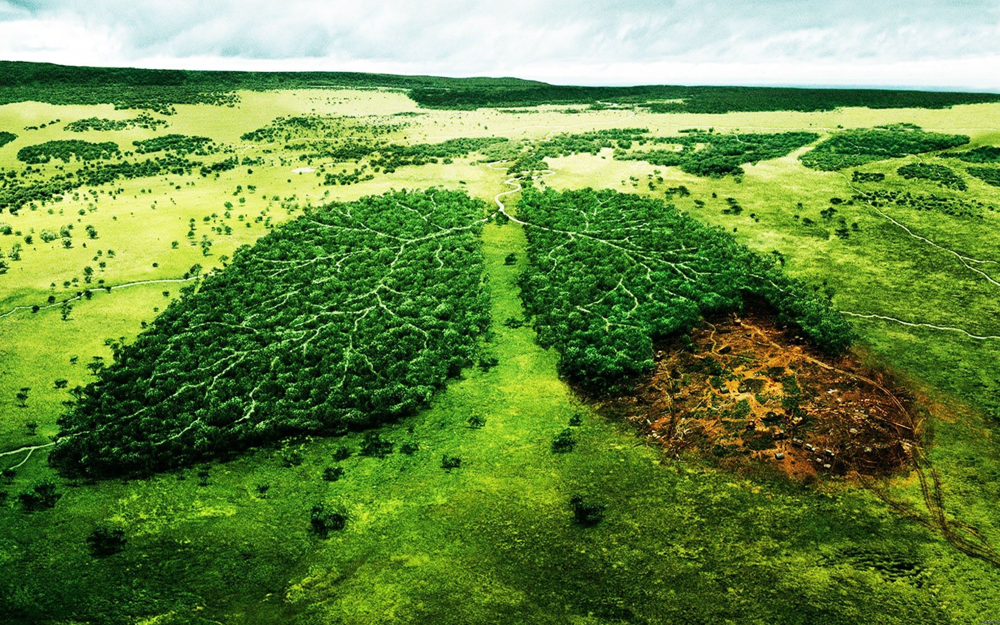
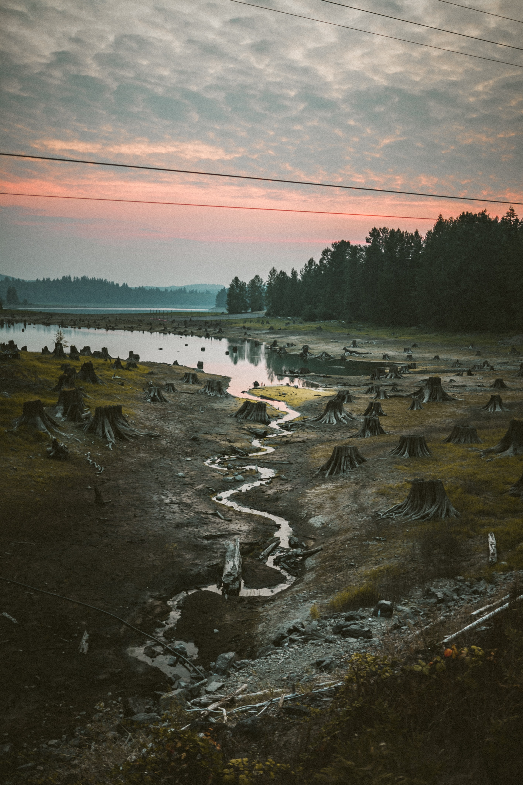

Deforstations :-
Deforestation means decrease of forest ares. This is done by cutting down trees in large amount, so much that one-third
of forest across the whole world were cut for our own purpose. This have a serious environmental concern, as it disturbs
water cycle & soil erosion, does damage to natural habitats, loss of biodiversity.

Causes & Effects :-

The primary human activities that cause deforestation are,
★ Agriculture, which cause 80% of deforestation which include small-scale farming and large-scale farming.
★ Logging or cutting down trees for raw material or clearing space for urban expansion cause 19% of deforestation. Other causes,
★ Natural causes like volcanic eruption, hurricanes, forest fires, parasites and other natural calamities. Though this all natural factors have very small role in overall deforestation. Deforestation have a very severe effect on our environment.
★ It increases the amount of carbon dioxide as there are less tree which can absorb this greenhouse gas. As a result, it contributes to global warming.
★ Trees plays a major role in water cycle, as it regulates the moisture content in the atmosphere and helps in water-holding capacity of the soil. Also resulting in desertification and droughts.
★ Trees helps in binding their roots to the soil bedrock, thereby reinforcing the soil, in the absence of tress the soil becomes more vulnerable to erosion causing landslides and infertility of soil.
★ Approx. 50,000 species (including plants, animals and insects) are lost every year as a consequence of deforestation. Studies shows that over 40% of all plant and animal species in the southeast asian region will undergo extinction over the course of the 21st century.
The other effects of deforestation,
★ Deforestation may cause short-term economic gains but are accompanied with reduced long-term productivity.
★ Deforestation can directly or indirectly cause many infectious diseases. In Malaysia, due to deforestation, fruit bats started feeding on orchards surrounding habitat areas, and through proximity, the Nipah virus spread from fruit bats to pigs and then to humans. Increased in soil erosion, resulted in formation of pools of contaminated water.These pools are ideal place for mosquitoes to breed, which are factors of several deadly diseases such as malaria and yellow fever.
★ Agriculture, which cause 80% of deforestation which include small-scale farming and large-scale farming.
★ Logging or cutting down trees for raw material or clearing space for urban expansion cause 19% of deforestation. Other causes,
★ Natural causes like volcanic eruption, hurricanes, forest fires, parasites and other natural calamities. Though this all natural factors have very small role in overall deforestation. Deforestation have a very severe effect on our environment.
★ It increases the amount of carbon dioxide as there are less tree which can absorb this greenhouse gas. As a result, it contributes to global warming.
★ Trees plays a major role in water cycle, as it regulates the moisture content in the atmosphere and helps in water-holding capacity of the soil. Also resulting in desertification and droughts.
★ Trees helps in binding their roots to the soil bedrock, thereby reinforcing the soil, in the absence of tress the soil becomes more vulnerable to erosion causing landslides and infertility of soil.
★ Approx. 50,000 species (including plants, animals and insects) are lost every year as a consequence of deforestation. Studies shows that over 40% of all plant and animal species in the southeast asian region will undergo extinction over the course of the 21st century.
The other effects of deforestation,
★ Deforestation may cause short-term economic gains but are accompanied with reduced long-term productivity.
★ Deforestation can directly or indirectly cause many infectious diseases. In Malaysia, due to deforestation, fruit bats started feeding on orchards surrounding habitat areas, and through proximity, the Nipah virus spread from fruit bats to pigs and then to humans. Increased in soil erosion, resulted in formation of pools of contaminated water.These pools are ideal place for mosquitoes to breed, which are factors of several deadly diseases such as malaria and yellow fever.
Preventions :-
Deforestation can be reduced by,
★ Running reforestation campaigns and spread awareness about deforestation.
★ Implementing new strict security measures to prevent illegal cutting of tress and banning inefficient agricultural practices such as slash-and-burn agriculture.
★ Reduce the use of wood and find alternatives to reduce the demand for woods.
★ Carefully planning the constructions of infrastructure to minimize the cutting of forest and trees.
★ Practicing RRR principle in every individual daily lives. Reduce-Reuse-Recycle.
★ Running reforestation campaigns and spread awareness about deforestation.
★ Implementing new strict security measures to prevent illegal cutting of tress and banning inefficient agricultural practices such as slash-and-burn agriculture.
★ Reduce the use of wood and find alternatives to reduce the demand for woods.
★ Carefully planning the constructions of infrastructure to minimize the cutting of forest and trees.
★ Practicing RRR principle in every individual daily lives. Reduce-Reuse-Recycle.